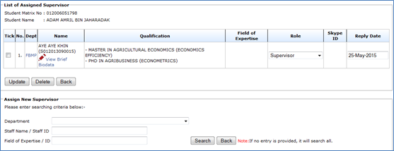
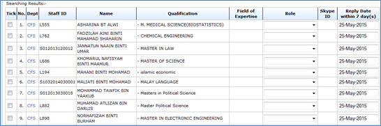
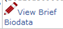
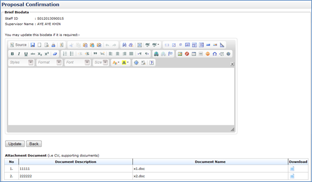
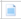

Figure 30: Proposal Confirmation – Change Supervisor/Co-Supervisor
Steps:-
- To assign new Supervisor/Co-supervisor. Choose the department of the supervisor on Department, enter the Staff Name/Staff and then click the Search button to search.
- If there is no entry provided, the search will display all the staff.

Figure 36: Proposal Confirmation – List All Staffs (If no search criteria is provided)

Figure 37: Proposal Confirmation – List the Selected Staff (based on provided search criteria)
- Choose the staff that the user wants to assign by ticking the checkbox.
- Then choose the role of the assigned staff whether to be Supervisor, Co-Supervisor, Internal Examiner, and External Examiner.
- Then choose the Reply Date
- After the entire step done, click Assign button.
- Then click Back button.
- Tick the Staff detail and click Delete button to remove the assigned supervisor/co-supervisor
- To View brief biodata of the staff click. (Look at 6.2.1.5.1 View Brief Biodata)
- To change the role, choose the Role listed.
- Then click Update button.
View Brief Biodata

Figure 38: Proposal Confirmation – View and Edit Supervisor/Co-Supervisor Biodata
Steps:-
- Insert necessary description into the Biodata and then click Update button
- To download necessary document such as supporting document, click  to download.
- Then click Back button.
Created with the Personal Edition of HelpNDoc: Easily create Web Help sites